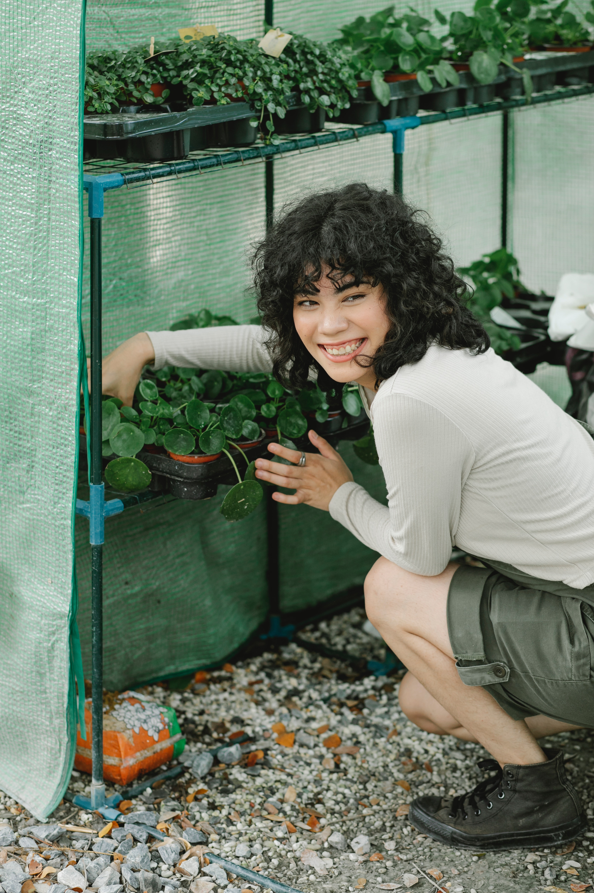
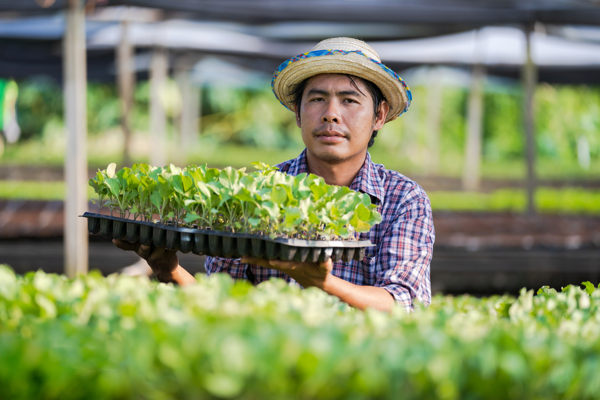
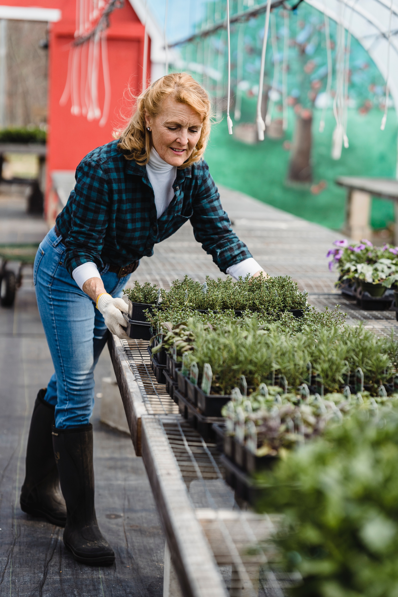
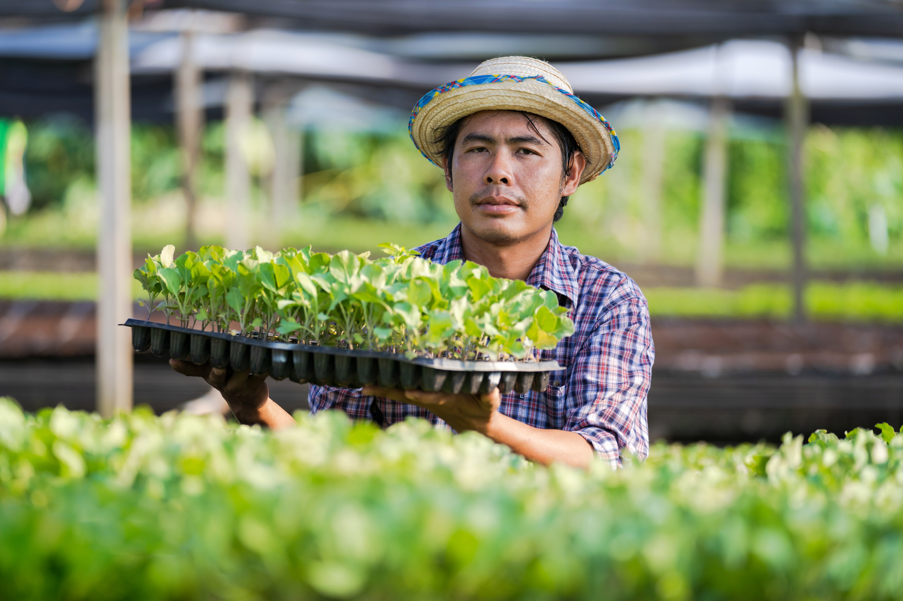
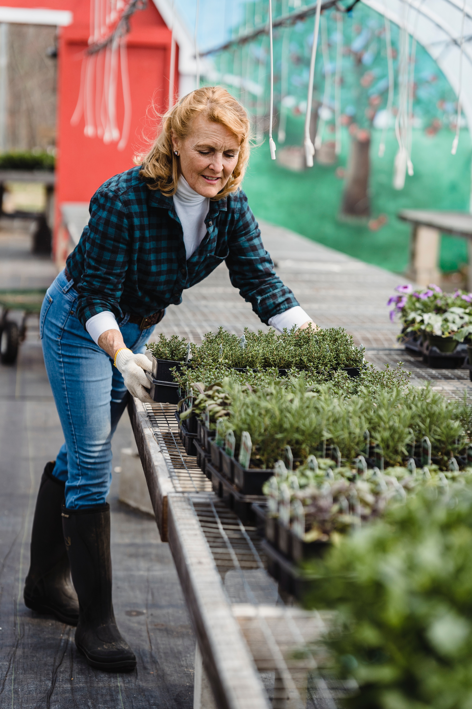

Sarais has always loved flowers and succulents from a young age. Although she didn’t always have a green thumb her love for plants encouraged her to get better. She decided to get a group together to see what can be done to grow plants succesfully. Through time she and her friends (now coworkers) got the run down of everything and was ready to take the next step to open up a shop. Green House Plant CO. is a green house filled with many selections of flowers and succulents. The Green House Plant CO. has been crafted carefully to give both our clients and plants the very best. Our team strives to help and expand the knowledge of plant caring and brightening up your home indoor and out door. Our main purpose is to help our customers achieve there goals of growing their gardens or simply keeping fresh flowers on your kitchen table. Green Plant House CO. is looking forward to seeing all of your faces and in the future wanting to expand all around the US. Hope to see you soon!
 



All content copyright © 2020, Green House Plant CO and Sarais Ocasio